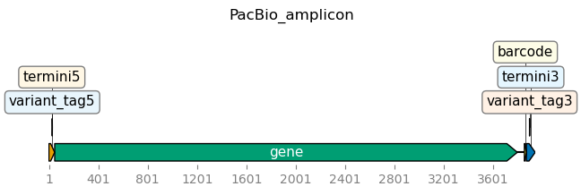

Analyze PacBio CCSs¶
This notebook analyzes the PacBio CCSs that have been previously aligned and parsed with alignparse.
Import Python modules:
[1]:
import os
import alignparse.targets
import altair as alt
import pandas as pd
import yaml
Get configuration information:
[2]:
# If you are running notebook interactively rather than in pipeline that handles
# working directories, you may have to first `os.chdir` to appropriate directory.
with open("config.yaml") as f:
config = yaml.safe_load(f)
Read in the PacBio runs:
[3]:
pacbio_runs = (
pd.read_csv(config["pacbio_runs"])
.assign(
pacbioRun=lambda x: x["library"] + "_" + x["run"].astype(str),
subdir=lambda x: config["process_ccs_dir"] + "/" + x["pacbioRun"],
)
.drop(columns="fastq")
)
pacbio_runs
[3]:
| library | run | pacbioRun | subdir | |
|---|---|---|---|---|
| 0 | Lib-1 | 220531 | Lib-1_220531 | results/process_ccs/Lib-1_220531 |
| 1 | Lib-1 | 220710 | Lib-1_220710 | results/process_ccs/Lib-1_220710 |
| 2 | Lib-1 | 220711 | Lib-1_220711 | results/process_ccs/Lib-1_220711 |
| 3 | Lib-2 | 220629 | Lib-2_220629 | results/process_ccs/Lib-2_220629 |
| 4 | Lib-3 | 220629 | Lib-3_220629 | results/process_ccs/Lib-3_220629 |
Stats on CCS alignments¶
Read and plot the alignment stats from running alignparse on the PacBio CCSs:
[4]:
readstats = pd.concat(
[
(
pd.read_csv(os.path.join(row.subdir, "readstats.csv")).assign(
pacbioRun=row.pacbioRun, library=row.library
)
)
for row in pacbio_runs.itertuples()
],
ignore_index=True,
)
readstats_chart = (
alt.Chart(readstats)
.encode(
x="count:Q",
y=alt.Y(
"category:N",
axis=alt.Axis(title=None),
),
tooltip=readstats.columns.tolist(),
facet=alt.Facet("pacbioRun:N", columns=2, title=None),
)
.mark_bar()
.properties(width=250, height=75)
.resolve_scale(x="independent", y="independent")
)
readstats_chart
/fh/fast/bloom_j/computational_notebooks/jbloom/2022/SARS-CoV-2_Omicron_BA.1_spike_DMS_mAbs/.snakemake/conda/007831973dd2e3f19dd20ccaf04e929c/lib/python3.9/site-packages/altair/utils/core.py:317: FutureWarning: iteritems is deprecated and will be removed in a future version. Use .items instead.
for col_name, dtype in df.dtypes.iteritems():
[4]:
Visualize target to which reads are being aligned¶
Draw images of the target we’re parsing:
[5]:
targets = alignparse.targets.Targets(
seqsfile=config["pacbio_amplicon"],
feature_parse_specs=config["pacbio_amplicon_specs"],
)
fig = targets.plot(
ax_width=7,
plots_indexing="genbank",
ax_height=2,
hspace=1.2,
)

Why were some CCSs filtered?¶
Plot the number of CCSs filtered for each reason:
[6]:
# CSVs holding filtered reads
filtered_csvs = pd.concat(
[
(
pd.read_csv(os.path.join(row.subdir, "filtered.csv")).assign(
pacbioRun=row.pacbioRun, library=row.library
)
)
for row in pacbio_runs.itertuples()
],
ignore_index=True,
)
# details for all filtered reads
filtered = pd.concat(
[
pd.read_csv(row.csv_file).assign(
target=row.target, pacbioRun=row.pacbioRun, library=row.library
)
for row in filtered_csvs.itertuples()
],
ignore_index=True,
)
# count reasons for filtering, then add number of non-filtered
filtered_reasons = pd.concat(
[
filtered.groupby(["pacbioRun", "filter_reason"], as_index=False).aggregate(
count=pd.NamedAgg("query_name", "count")
),
readstats.query('category.str.startswith("aligned")', engine="python")
.groupby("pacbioRun", as_index=False)
.aggregate({"count": "sum"})
.assign(filter_reason="aligned"),
]
).assign(
total_counts=lambda x: x.groupby("pacbioRun")["count"].transform("sum"),
frac_counts=lambda x: x["count"] / x["total_counts"],
)
# make chart
filtered_chart = (
alt.Chart(filtered_reasons)
.encode(
x="count:Q",
y=alt.Y(
"filter_reason:N",
axis=alt.Axis(title=None),
),
color="is_aligned:N",
tooltip=filtered_reasons.columns.tolist(),
facet=alt.Facet("pacbioRun:N", columns=2, title=None),
)
.mark_bar()
.properties(width=250, height=75)
.resolve_scale(x="independent", y="independent")
.transform_filter(alt.datum.frac_counts > 0.01)
.transform_calculate(is_aligned=alt.datum.filter_reason == "aligned")
)
filtered_chart
/fh/fast/bloom_j/computational_notebooks/jbloom/2022/SARS-CoV-2_Omicron_BA.1_spike_DMS_mAbs/.snakemake/conda/007831973dd2e3f19dd20ccaf04e929c/lib/python3.9/site-packages/altair/utils/core.py:317: FutureWarning: iteritems is deprecated and will be removed in a future version. Use .items instead.
for col_name, dtype in df.dtypes.iteritems():
[6]:
Get CCSs that align to the amplicon¶
[7]:
# CSVs holding aligned reads
aligned_csvs = pd.concat(
[
(
pd.read_csv(os.path.join(row.subdir, "aligned.csv")).assign(
pacbioRun=row.pacbioRun, library=row.library
)
)
for row in pacbio_runs.itertuples()
],
ignore_index=True,
)
assert aligned_csvs["target"].nunique() == 1
aligned = pd.concat(
[
(
pd.read_csv(row.csv_file)
.assign(pacbioRun=row.pacbioRun, library=row.library)
.drop(columns=["query_clip5", "query_clip3"])
.rename(columns={"barcode_sequence": "barcode"})
)
for row in aligned_csvs.itertuples()
],
ignore_index=True,
)
print(f"\nRead {len(aligned):.4g} alignable CCSs:")
display(
aligned.groupby("pacbioRun").aggregate(n_CCSs=pd.NamedAgg("query_name", "count"))
)
output_csv = config["aligned_ccs_file"]
print(f"Writing to {output_csv}")
aligned.to_csv(output_csv, index=False)
Read 8.336e+06 alignable CCSs:
| n_CCSs | |
|---|---|
| pacbioRun | |
| Lib-1_220531 | 607452 |
| Lib-1_220710 | 926231 |
| Lib-1_220711 | 871600 |
| Lib-2_220629 | 2939400 |
| Lib-3_220629 | 2991633 |
Writing to results/process_ccs/CCSs_aligned_to_amplicon.csv